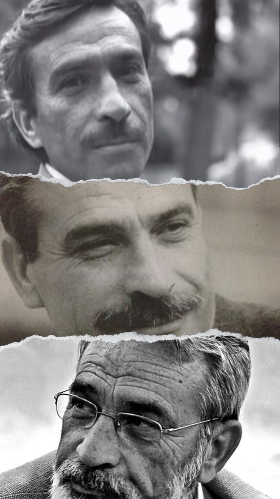

"La Belle Dame sans Merci"
Home
İsmet Özel, Türk şair, yazar ve deneme yazarı. Aslen Aydın, Sökelidir. 1980 sonrası birçok şair ve yazarı, şiirleri ve düşünce alanında kaleme aldığı eserleriyle etkilemiştir. Modern Türk şiirinin hem anlam hem de söyleyiş bakımından zenginleşmesinde önemli katkılarda bulunmuştur